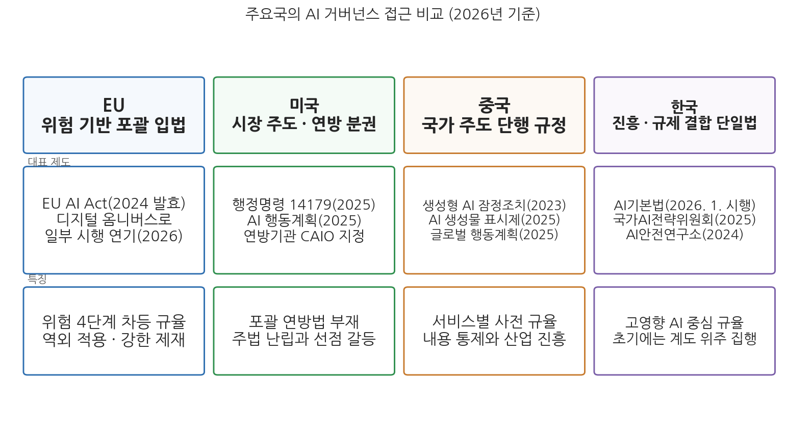
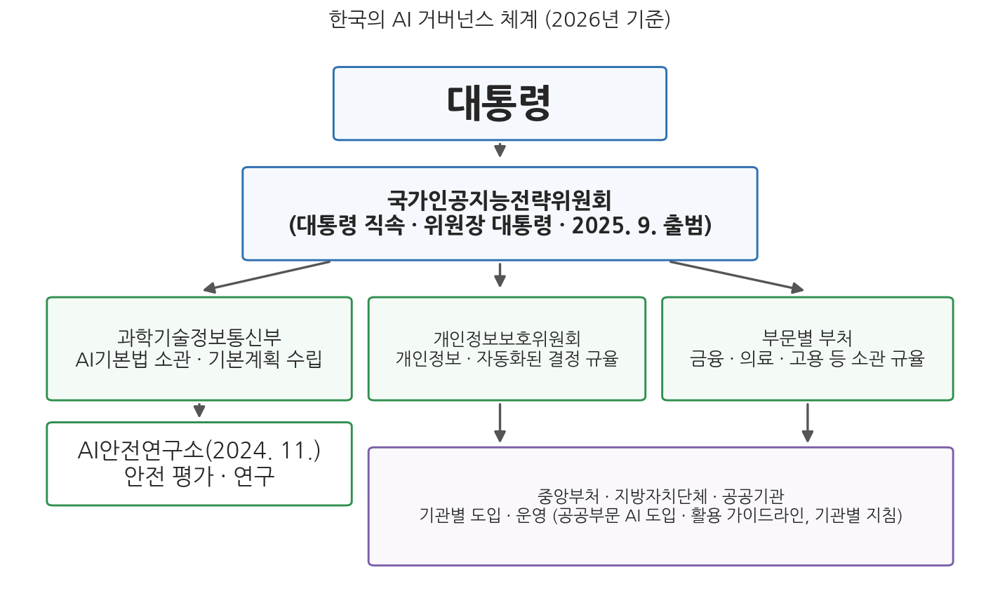

11주차 2차시. AI와 거버넌스 (2): 국내외 거버넌스 체계
이해관계자들은 사람과 지구에 이로운 결과를 추구하면서, 신뢰할 수 있는 AI의 책임 있는 관리에 능동적으로 참여해야 한다. (OECD AI 권고 원칙 1.1, 2019년 채택, 2024년 개정)
이 장에서 배우는 것
2026년 7월 6일과 7일, 스위스 제네바에서 UN 역사상 처음으로 모든 회원국이 참여하는 AI 거버넌스 회의체, 곧 AI 거버넌스에 관한 글로벌 대화(Global Dialogue on AI Governance)의 첫 회의가 열렸다. 회의 닷새 전인 7월 1일에는 40인의 과학자로 구성된 AI에 관한 국제독립과학패널이 AI의 기회와 위험에 대한 첫 평가 보고서를 내놓아 논의의 재료를 제공했다. 두 기구는 2025년 8월 UN 총회 결의로 만들어졌고, 기후변화 대응에서 과학 평가(IPCC)와 정치 협상(당사국총회)이 짝을 이루는 구조를 AI에 옮겨 온 것이라는 평가를 받는다.
이 장면이 놀라운 것은 속도다. 2019년에 세계가 가진 것이라고는 법적 구속력 없는 원칙 문서 몇 장이 전부였다. 그런데 불과 7년 사이에 원칙은 국제기구의 상설 기구로, 각국의 법률로, 개별 행정기관의 지침과 책임자 직위로 바뀌었다. 1차시에서 우리는 AI 거버넌스가 국제, 국가, 조직의 세 층위에서 작동한다는 지도를 그렸다. 이번 차시는 그 지도 위에 실물을 채워 넣는다. 국제기구들이 만든 원칙과 기구, 미국·EU·중국이 걷는 서로 다른 길, 2026년 현재 한국의 거버넌스 체계, 그리고 개별 공공기관 안의 운영 체계까지다. 시점을 밝혀 두자. 이 장의 사실관계는 2026년 7월 초 기준이며, 이 분야는 몇 달 단위로 바뀌므로 여러분이 읽는 시점에는 다시 확인이 필요할 수 있다. 구체적으로 다음을 배운다.
- OECD AI 원칙, UNESCO 권고, UN의 새 기구들은 각각 무엇을 하며 어떻게 다른가
- AI 정상회의 트랙과 최초의 구속력 있는 조약(유럽평의회 기본협약)은 어디까지 왔는가
- 미국, EU, 중국의 AI 거버넌스 접근은 무엇이 다르고 왜 다른가
- 2026년 기준 한국의 AI 거버넌스 체계(AI기본법, 국가인공지능전략위원회, AI안전연구소)는 어떻게 짜여 있는가
- 개별 공공기관 수준에서 AI 운영 체계는 어떤 요소로 구성되는가
이 장은 1차시의 세 층위 지도를 따라 위에서 아래로 내려온다. "원칙과 기구, 법률, 기관 운영 체계는 2026년 현재 실제로 어떻게 짜여 있는가?"
2.1 국제 수준: OECD·UNESCO·UN과 정상회의 트랙, 최초의 AI 조약 → 2.2 국가 수준의 비교: EU의 포괄 입법, 미국의 시장 주도, 중국의 국가 주도 → 2.3 한국: AI기본법 시행과 국가인공지능전략위원회 체계 → 2.4 조직 수준: 공공기관 AI 운영 체계의 공통 요소와 쟁점. 규제의 논리와 EU·한국 법의 조문 수준 비교는 12주차에서 이어진다.
2.1 국제기구의 AI 거버넌스
OECD AI 원칙: 최초의 정부 간 표준
국제 수준의 출발점은 2019년 5월 OECD 각료이사회가 채택한 OECD AI 원칙(AI 권고, Recommendation of the Council on Artificial Intelligence)이다. 정부들이 공식적으로 합의한 최초의 정부 간 AI 표준으로, 다섯 개의 가치 기반 원칙(포용적 성장과 지속가능한 발전·웰빙, 인권과 민주적 가치 존중, 투명성과 설명가능성, 견고성·보안·안전, 책임성)과 각국 정책에 대한 다섯 개의 권고로 구성된다. 이 목록이 우리 교재 2부에서 다룬 가치들과 겹친다는 점은 우연이 아니다. 1차시에서 본 대로 2010년대 후반의 윤리원칙들은 내용상 수렴했고, OECD 원칙은 그 수렴의 정부 간 공인판이라 할 수 있다.
OECD 원칙의 힘은 구속력이 아니라 파급력에 있다. G20의 AI 원칙(2019)이 이를 그대로 차용했고, 각국의 국가 전략과 법률이 이 원칙을 참조 틀로 삼았다. 이후의 전개도 눈여겨볼 만하다. 2024년 5월 OECD는 생성형 AI의 등장을 반영해 원칙을 개정했다. 개정판은 범용·생성형 AI가 제기하는 허위정보, 지식재산권, 안전 문제를 더 직접적으로 다루고, 시스템 폐기와 오작동 대응까지 포함하도록 책임성 개념을 넓혔다. 2026년 현재 이 권고의 지지국(adherents)은 OECD 회원국과 EU, 그리고 브라질, 싱가포르, 우크라이나 등 비회원국을 포함해 47개에 이른다. 또한 OECD는 AI 정책 관측소(OECD.AI)를 통해 각국 정책 데이터베이스를 운영하며, 2024년 7월에는 다자 협력체인 AI 글로벌 파트너십(GPAI)이 OECD와 통합되어 원칙-데이터-협력 네트워크가 한 우산 아래 모였다.
UNESCO 권고: 가장 넓은 합의
2021년 11월에는 UNESCO 총회가 AI 윤리 권고(Recommendation on the Ethics of Artificial Intelligence)를 채택했다. 193개 회원국이 합의한, 지리적으로 가장 넓은 범위의 AI 규범이다. OECD 원칙이 주로 선진국 클럽의 표준이라면 UNESCO 권고는 개발도상국을 포함한 전 지구적 문서이며, 내용 면에서도 데이터 거버넌스, 환경, 젠더, 교육 등 정책 영역별 행동까지 담아 더 포괄적이다. UNESCO는 권고를 선언으로 끝내지 않기 위해 회원국의 이행 수준을 진단하는 준비도 평가방법론(RAM, Readiness Assessment Methodology)을 개발해 수십 개국에서 적용하고 있다. 1차시의 언어로 말하면, 연성규범에 이행 점검이라는 최소한의 하부구조를 붙이려는 시도다.
UN: 결의에서 상설 기구로
가장 극적인 변화는 UN 본체에서 일어났다. 2024년 3월 UN 총회는 최초의 AI 결의인 「지속가능발전을 위한 안전하고 신뢰할 수 있는 AI 기회의 포착」을 표결 없이 컨센서스로 채택했다. 미국이 주도하고 중국을 포함한 120여 개국이 공동제안국으로 참여한, 진영을 넘은 합의였다. 같은 해 9월 미래정상회의에서는 글로벌 디지털 콤팩트(Global Digital Compact)가 채택되었고, UN 사무총장의 AI 고위급 자문기구는 최종 보고서 「인류를 위한 AI 거버넌스(Governing AI for Humanity)」에서 세계 AI 거버넌스의 공백, 곧 AI의 영향은 전 지구적인데 그것을 다룰 포괄적 국제 체계는 없다는 진단을 내놓았다.
그 처방이 2025년 8월 26일 UN 총회 결의(A/RES/79/325)로 제도화되었다. 결의는 두 기구의 설치를 결정했다. 하나는 AI에 관한 국제독립과학패널로, 성별·지역·기술 발전 수준의 다양성을 반영한 40인의 과학자로 구성되어 AI의 기회·위험·영향에 대한 증거 기반 평가를 매년 내놓는다. 다른 하나는 모든 회원국이 참여하는 글로벌 대화다. 과학이 평가하고 정치가 협의하는 이 구조는 기후변화 거버넌스의 IPCC-당사국총회 모델을 의식한 설계다.
2025년 8월의 총회 결의에 따라 2026년 2월 UN 총회는 사무총장이 추천한 40인을 국제독립과학패널 위원으로 임명했고, 패널은 2026년 7월 1일 첫 평가 보고서를 공개했다. 보고서는 AI의 편익과 함께 통제 상실 가능성을 포함한 위험을 증거 기반으로 검토했다. 이를 받아 2026년 7월 6-7일 제네바에서 글로벌 대화의 첫 회의가 열렸다. 모든 UN 회원국이 참여하는 최초의 상설적 AI 논의 틀로, 두 번째 회의는 2027년 5월 뉴욕에서 열릴 예정이다. (UN 글로벌 디지털 콤팩트·글로벌 대화 공식 페이지, 2026년 7월 확인)
이 사례가 보여 주는 것은 국제 수준 거버넌스의 진화 방향이다. 2019년의 OECD 원칙이 "무엇이 바람직한가"의 문서였다면, 2026년의 UN 기구들은 "누가, 언제, 어디에 모여, 무엇을 근거로 논의하는가"라는 절차와 조직의 문제에 답한다. 1차시에서 본 원칙에서 제도로의 이동이 국제 수준에서도 일어나고 있는 것이다. 물론 한계도 뚜렷하다. 글로벌 대화는 협상 기구가 아니라 대화 기구이며, 구속력 있는 결정을 내릴 수 없다. 강대국 간 기술 경쟁이 격화되는 조건에서 이 틀이 실질을 채울 수 있을지는 열린 질문이다.
정상회의 트랙과 최초의 AI 조약
국제기구 바깥에서는 정상회의 외교가 또 하나의 트랙을 이룬다. 2023년 11월 영국 블레츨리 파크에서 열린 첫 AI 안전성 정상회의는 28개국과 EU가 서명한 블레츨리 선언을 낳았고, 2024년 5월 한국이 공동 주최한 서울 정상회의는 안전·혁신·포용을 함께 내건 서울 선언과 각국 AI 안전연구소(AI Safety Institute)들의 협력 네트워크를 출범시켰다. 2025년 2월 파리 AI 행동 정상회의에서는 60여 개국이 공동선언에 서명했지만 미국과 영국이 서명을 거부해, 안전 중심 의제에서 이탈하는 균열을 드러냈다. 2026년 2월 인도 뉴델리에서 열린 AI 임팩트 정상회의는 91개 국가·국제기구가 지지한 뉴델리 선언을 채택했는데, 미국, 중국, 러시아가 모두 이름을 올려 다시 폭넓은 참여를 회복했다는 평가와, 구속력 없는 문서의 한계가 반복되었다는 평가가 엇갈린다.
구속력의 공백을 메우려는 첫 시도는 유럽에서 나왔다. 2024년 9월 서명이 개방된 유럽평의회 AI 기본협약(Framework Convention on Artificial Intelligence and Human Rights, Democracy and the Rule of Law)은 AI 분야 최초의 법적 구속력 있는 국제조약으로, AI의 전 수명주기가 인권·민주주의·법치와 양립하도록 당사국에 의무를 지운다. 미국, EU, 영국 등이 서명했고, 2026년 5월에는 EU가 비준을 마치는 등 발효를 향한 절차가 진행 중이다. 다만 협약은 구체적 규율을 상당 부분 당사국의 국내법에 맡기는 기본협약 형식이어서, 실질은 결국 각국의 이행에 달려 있다.
연성규범(soft law)은 원칙, 권고, 선언처럼 법적 구속력은 없지만 행위의 표준을 제시하는 규범이고, 경성규범(hard law)은 법률과 조약처럼 의무와 제재가 따르는 규범이다. 국제 AI 거버넌스는 OECD 원칙·UNESCO 권고·정상회의 선언(연성)에서 출발해 유럽평의회 기본협약(경성)으로 스펙트럼을 넓혀 왔다. 연성규범은 빠르고 넓은 합의가 가능하지만 이행을 강제할 수 없고, 경성규범은 강제할 수 있지만 합의가 느리고 참여국이 좁다. 두 유형은 대체재라기보다 보완재로 작동한다.
2.2 주요국 비교: EU, 미국, 중국
국가 수준으로 내려오면 그림이 갈라진다. 같은 국제 원칙에 고개를 끄덕인 나라들이 국내에서는 매우 다른 체계를 만들었다.

그림 11-3을 읽는 법은 이렇다. 네 열이 각각 EU, 미국, 중국, 한국의 접근을 나타내고, 위 상자가 접근의 성격, 가운데가 대표 제도, 아래가 특징이다. 이 그림에서 알 수 있는 것은, 네 접근의 차이가 기술 수준의 차이가 아니라 규제 철학과 정치 체제의 차이에서 나온다는 점이다. EU는 기본권 보호를, 미국은 혁신과 시장을, 중국은 국가의 통제와 산업 육성을, 한국은 진흥과 규제의 결합을 각각 앞세운다.
EU: 위험 기반 포괄 입법과 그 진통
EU는 세계에서 가장 야심찬 길을 택했다. 2024년 8월 발효된 EU AI Act(인공지능법)는 AI 시스템을 위험 수준에 따라 금지, 고위험, 제한적 위험, 최소 위험의 네 단계로 나누어 차등 규율하는 포괄 입법으로, EU 시장에 제품을 내놓는 역외 기업에도 적용되며 위반 시 전 세계 매출액 기준의 과징금을 물릴 수 있다. 시행은 단계적으로 설계되어 2025년 2월에 금지 조항이, 2025년 8월에 범용 AI 모델 의무가 적용되기 시작했다.
그러나 2026년의 EU는 자신이 만든 법의 속도를 스스로 늦추는 중이다. 미국·중국과의 기술 경쟁 속에서 유럽 산업계가 준수 부담을 호소하자, 집행위원회는 2025년 11월 이른바 디지털 옴니버스(Digital Omnibus) 패키지를 통해 AI Act의 일부 시행 연기와 간소화를 제안했고, 이 개정은 2026년 상반기에 확정되었다.
EU AI Act의 고위험 AI 의무는 본래 2026년 8월 2일부터 적용될 예정이었다. 그러나 집행위원회가 2025년 11월 제안한 디지털 옴니버스에 대해 2026년 5월 7일 이사회·유럽의회·집행위가 잠정 합의하고, 유럽의회(6월 16일)와 이사회(6월 29일)가 승인을 마치면서 일정이 바뀌었다. 부속서 III의 독립형 고위험 시스템 의무는 2027년 12월 2일로, 규제 대상 제품에 내장된 AI(부속서 I)는 2028년 8월 2일로 연기되었다. 반면 AI 생성물임을 알리는 투명성 의무(제50조)는 예정대로 2026년 8월 2일에 적용되며, 합의는 동의 없는 합성 성적 이미지 생성 도구를 금지 목록에 추가하는 강화도 함께 담았다. (EU 이사회 보도자료, 2026년 5-6월)
이 사례가 보여 주는 것은 두 가지다. 첫째, 1차시에서 본 환류의 실제다. 조직·기업 수준의 이행 경험(준수 부담)이 국가·초국가 수준의 법 개정으로 되돌아왔다. 둘째, 규제 경쟁의 압력이다. 브뤼셀 효과를 통해 세계 표준이 되기를 기대했던 법이, 혁신 경쟁에서 뒤처진다는 역내의 불안 때문에 일부 후퇴한 것이다. 강한 규범과 산업 경쟁력 사이의 긴장은 12주차 규제 논의의 중심 주제가 된다.
미국: 시장 주도와 진자 운동
미국은 포괄적 연방 AI법이 없는 나라다. 대신 대통령 행정명령과 기관별 지침, 그리고 주(州)법이 조각보처럼 규율을 이룬다. 그 결과 정권이 바뀔 때마다 방향이 크게 흔들린다. 바이든 행정부는 2023년 10월 행정명령 14110으로 안전성 평가와 보고 의무 중심의 체계를 세웠지만, 트럼프 행정부는 2025년 1월 이를 폐지하고 행정명령 14179 「미국의 AI 리더십을 가로막는 장벽 제거」로 대체했으며, 2025년 7월에는 규제 완화와 인프라 확충, 국제 경쟁 우위를 앞세운 「미국 AI 행동계획(America's AI Action Plan)」을 발표했다.
연방 입법의 공백을 메운 것은 주 의회들이다. 채용 알고리즘의 편향 감사를 요구하는 뉴욕시 조례, 포괄적 AI 차별 금지를 담은 콜로라도 AI법 등 주·지방 차원의 규율이 늘어나자, 이번에는 연방과 주의 충돌이 불거졌다. 2025년 12월 트럼프 대통령은 행정명령 「AI에 관한 국가 정책 프레임워크의 보장」에 서명해, 법무부에 주 AI법에 대한 소송 전담팀을 만들고 연방 재정 지원을 지렛대로 주법을 무력화하는 방안을 지시했다. 그러나 이 시도는 초당적 반발과 위헌 논란에 부딪혀 있으며, 2026년 중반 현재 광범한 연방 선점(preemption)이 실현될 법적 근거는 불확실하다는 평가가 많다. 미국 사례는 분권형 체계의 역동성과 불안정성을 동시에 보여 준다.
중국: 국가 주도의 단행 규정 축적
중국은 포괄 입법 대신 서비스 유형별 단행 규정을 빠르게 쌓아 왔다. 알고리즘 추천 관리규정(2022), 딥페이크를 겨냥한 심층합성 규정(2023), 그리고 생성형 AI 서비스 잠정관리조치(2023년 8월 시행)가 대표적이다. 2025년 9월 1일부터는 AI 생성 콘텐츠에 표시(라벨)를 의무화하는 조치가 시행되어, 이용자가 접하는 텍스트·이미지·영상에 AI 생성 여부를 명시하도록 했다. 이 체계의 특징은 이중성이다. 한편으로 내용 통제(사회주의 핵심가치 준수 등)라는 정치적 목표가 뚜렷하고, 다른 한편으로 산업 육성을 위한 진흥책이 결합되어 있다.
국제 무대에서 중국은 적극적 규범 수출국으로 나섰다. 2023년 10월 글로벌 AI 거버넌스 이니셔티브를 발표한 데 이어, 2025년 7월 상하이 세계AI대회(WAIC)에서 「글로벌 AI 거버넌스 행동계획」을 내놓고 상하이에 본부를 둘 세계AI협력기구의 창설을 제안했다. AI 발전의 혜택을 개발도상국과 나누겠다는 포용의 언어를 앞세운 이 행보는, 미국 중심 질서에 대한 대안 축을 만들려는 시도로 읽힌다. 국제 AI 거버넌스가 지정학의 무대이기도 하다는 사실을 보여 주는 대목이다.
수렴과 분기
세 접근은 갈라져 있지만 수렴하는 지점도 있다. AI 생성물 표시 의무는 EU(AI Act 제50조), 중국(표시제), 한국(AI기본법)이 나란히 도입했고, 안전연구소 네트워크에는 미국·영국·한국·일본·EU 등이 함께 참여한다. 반면 갈라지는 지점은 근본적이다. 규율의 목적이 기본권 보호(EU)인가, 혁신 경쟁력(미국)인가, 체제 안정과 국가 전략(중국)인가에 따라, 같은 "신뢰할 수 있는 AI"라는 말이 서로 다른 제도로 번역된다. 6주차에서 본 민주주의와 AI의 관계를 떠올리면, 이 분기는 기술 정책의 차이가 아니라 정치 체제의 차이가 투영된 것임을 알 수 있다.
2.3 한국의 AI 거버넌스 (2026년 기준)
AI기본법: 두 번째의 포괄 입법
한국은 2024년 12월 26일 국회에서 AI기본법(인공지능 발전과 신뢰 기반 조성 등에 관한 기본법)을 통과시키고 2025년 1월 21일 공포했으며, 1년의 준비 기간을 거쳐 2026년 1월 22일부터 시행에 들어갔다. EU에 이어 세계에서 두 번째로 포괄적 AI 법제를 갖춘 것이다. 법의 성격은 이름에 드러난다. "발전"(진흥)과 "신뢰 기반"(규제)을 한 법에 담은 진흥·규제 결합형으로, 산업 육성의 근거(기본계획, 전문인력, 데이터·컴퓨팅 지원)와 위험 규율(고영향 AI 의무, 생성형 AI 표시)을 함께 규정한다.
규제의 중심 개념은 고영향 AI다.
고영향 인공지능은 사람의 생명, 신체의 안전, 기본권에 중대한 영향을 미치거나 위험을 초래할 우려가 있는 영역에서 활용되는 AI 시스템을 말한다(AI기본법 제2조). 에너지, 먹는물, 보건의료, 원자력, 범죄 수사(생체인식 활용), 채용 등 개인의 권리·의무에 중대한 영향을 미치는 판단·평가, 대출 심사 등이 해당 영역으로 제시된다. EU AI Act의 "고위험 AI"와 발상이 같은 위험 기반 접근이지만, 규율의 강도는 더 낮다. 고영향 AI 사업자에게는 사전 고지, 안전성·신뢰성 확보 조치, 위험관리, 이용자 보호 등의 의무가 부과되고, 생성형 AI에는 AI 생성물임을 표시할 의무가 적용된다.
집행의 강도는 의도적으로 낮게 설정되었다. 위반에 대한 제재는 형벌이 아니라 3천만 원 이하의 과태료 중심이고, 정부는 시행 초기 1년 이상 과태료를 부과하지 않는 계도 기간을 운영하기로 했다(2026년 시행 관련 정부 발표). 산업계의 위축을 피하면서 제도를 안착시키겠다는 설계이지만, 규율의 실효성이 그만큼 유예된다는 비판도 있다. 법의 조문 구조와 EU AI Act와의 상세 비교는 12주차에서 다룬다.
추진 체계: 위원회, 부처, 연구소
법과 함께 기구의 골격도 갖추어졌다. 그림 11-4가 2026년 현재의 체계다.

그림 11-4를 읽는 법은 이렇다. 맨 위가 대통령과 대통령 직속 위원회, 가운데가 소관 부처들, 아래가 실행 층위다. 이 그림에서 알 수 있는 것은 한국 체계의 특징인 대통령 직속 컨트롤타워 구조다. 정점의 국가인공지능전략위원회는 대통령을 위원장으로 하여 국가 AI 정책 전반을 심의·의결하고 부처 간 조정과 이행 점검을 맡는다. 과학기술정보통신부는 AI기본법의 소관 부처로서 3년 단위 인공지능 기본계획을 수립하고 법을 집행한다. 개인정보보호위원회는 AI의 데이터 처리와 자동화된 결정을 개인정보보호법으로 규율하는데, 2023년 개정법이 도입한 자동화된 결정에 대한 정보주체의 권리(7주차에서 본 대응권)가 AI 거버넌스의 또 하나의 축이 된다. 금융(금융위원회), 의료(보건복지부) 등 부문별 부처의 소관 규율이 그 옆에 놓인다. AI안전연구소는 2024년 11월 한국전자통신연구원(ETRI) 부설로 출범해 AI 안전 평가와 연구를 맡으며, 앞서 본 국제 안전연구소 네트워크의 한국 창구 역할을 한다.
2024년 9월 윤석열 정부는 대통령을 위원장으로 하는 민관 합동 국가인공지능위원회를 출범시켰다. 2025년 6월 출범한 이재명 정부는 "AI 3대 강국" 도약을 국정 목표로 내걸고 이 기구를 확대 개편해, 2025년 9월 8일 대통령 직속 국가인공지능전략위원회가 출범했다. 위원장인 대통령과 상근 부위원장을 포함해 민간 위원 34명, 관계 부처 장관급 13명, 대통령실 참모 2명 등 50명으로 구성되며, 종전의 자문 기능을 넘어 심의·의결, 부처 간 조정, 이행 점검과 성과 관리 기능을 수행하는 국가 AI 정책의 최상위 기구로 자리매김했다. (국가인공지능전략위원회 출범식 보도, 2025년 9월)
이 사례가 보여 주는 것은 거버넌스 기구의 연속과 단절이다. 정권이 교체되었는데도 "대통령 직속 민관 합동 위원회"라는 형식은 폐지되지 않고 오히려 권한이 강화된 채 계승되었다. AI 국가 전략이 진영을 넘는 과제로 자리 잡았음을 보여 주는 한편, 위원회의 이름과 구성이 정권에 따라 재편된다는 사실 자체는 이 체계가 법률보다 정치적 의지에 기대어 있음을 시사한다. 위원회 중심 체계의 안정성은 앞으로의 시험대다.
평가와 쟁점
2026년의 한국 체계를 1차시의 틀로 평가해 보자. 층위의 관점에서 한국은 국제(안전연구소 네트워크, 서울 정상회의 주최), 국가(AI기본법, 전략위원회), 조직(다음 절의 가이드라인) 세 층위를 모두 갖춘 드문 사례다. 그러나 쟁점도 뚜렷하다. 첫째, 진흥과 규제의 동거다. 과학기술정보통신부는 AI 산업 진흥의 주무 부처이면서 동시에 고영향 AI 규율의 집행자다. 진흥 부처가 규제를 겸하면 규율이 무뎌진다는 이해상충의 우려가 있고, 독립 감독기구를 두어야 한다는 주장과 초기 산업에는 통합형이 낫다는 반론이 맞선다. 둘째, 개념의 불확정성이다. 어떤 시스템이 고영향 AI에 해당하는지의 판단이 실무에서 쉽지 않아, 시행 첫해의 해석례와 가이드라인이 제도의 실질을 결정할 것이다. 셋째, 소관의 중첩이다. 과기정통부, 개인정보보호위원회, 방송통신위원회, 부문별 부처의 권한이 겹치는 지점에서 조정 비용이 발생하며, 전략위원회의 조정 기능이 실제로 작동하는지가 관건이 된다.
2.4 조직 수준의 거버넌스: 공공기관의 AI 운영 체계
기관 안의 거버넌스: 미국 연방정부 모델
법과 위원회가 있어도, AI를 실제로 도입하고 운영하는 것은 개별 기관이다. 조직 수준 거버넌스의 가장 체계적인 모델 중 하나는 미국 연방정부에서 볼 수 있다. 관리예산처(OMB)는 2025년 4월 지침 M-25-21을 통해 모든 연방기관에 다음을 요구했다. 최고AI책임자(CAIO, Chief AI Officer)의 지정, 기관 차원의 AI 전략 수립, 기관이 사용하는 AI 사용 사례 목록(use case inventory)의 공개, 그리고 국민의 권리와 안전에 중대한 영향을 미치는 고영향 AI에 대한 최소 위험관리 관행(사전 영향평가, 인간 감독, 성능 모니터링 등)의 적용이다. 기준을 충족하지 못하는 고영향 AI는 사용을 중단해야 한다. 흥미로운 점은 이 지침이 규제 완화를 내건 트럼프 행정부에서 나왔다는 사실이다. 전임 행정부의 지침(M-24-10)을 대체하며 "혁신 가속"의 언어를 앞세웠지만, 책임자 지정, 목록 공개, 고영향 심사라는 골격은 유지했다. 민간 규제에는 반대해도 정부 자신의 AI 사용에는 내부 거버넌스가 필요하다는 데에는 이견이 없었던 셈이다.
한국: 가이드라인과 법정 의무의 결합
한국의 조직 수준 거버넌스는 가이드라인에서 출발해 법정 의무로 두꺼워지는 중이다. 디지털플랫폼정부위원회와 한국지능정보사회진흥원(NIA)은 2024년 4월 「공공부문 초거대 AI 도입·활용 가이드라인」을 배포한 데 이어 2025년 4월 개정판(2.0)을 내놓았다. 가이드라인은 도입 절차와 고려사항, 데이터 보안 등급 분류, 검색증강생성(RAG) 같은 기술 방식, 성과관리와 함께, 기관 내 거버넌스 정립, 곧 데이터 관리·보안·운영·교육에 대한 명확한 역할과 책임의 의사결정 체계를 갖추라고 요구한다. 여기에 2026년 시행된 AI기본법이 법정 의무를 얹었다. 국가와 지방자치단체는 AI 정책 추진에서 안전성과 신뢰성을 고려해야 하고, 고영향 AI의 도입·활용에는 앞 주(10주차)에서 본 영향평가의 체계가 연결된다. 국제 표준도 조직 거버넌스의 도구가 되고 있다. AI 경영시스템 표준인 ISO/IEC 42001(2023)과 미국 국립표준기술연구소의 AI 위험관리 프레임워크(NIST AI RMF, 2023)는 기관이 자신의 관리 체계를 점검하고 인증받는 준거로 쓰인다.
공통 요소와 남는 문제
나라마다 형식은 달라도 조직 수준 거버넌스의 공통 요소는 수렴하고 있다. (1) 방향을 정하는 기관 AI 전략, (2) 책임 소재를 분명히 하는 책임자와 전담 조직, (3) 무엇을 쓰고 있는지 드러내는 사용 목록과 등록부, (4) 도입 전후를 점검하는 영향평가와 심사, (5) 운영을 검증하는 모니터링과 감사다. 1차시에서 본 알고리즘 등록부(암스테르담·헬싱키)와 10주차의 영향평가가 이 목록의 (3), (4)에 해당함을 확인해 두자.
남는 문제는 셋이다. 첫째, 역량의 격차다. 중앙부처와 대형 공공기관은 전담 인력을 둘 수 있지만, 기초자치단체와 소규모 기관은 책임자 지정조차 형식에 그치기 쉽다. 조직 거버넌스의 요구 수준이 높아질수록 격차는 벌어진다. 둘째, 서류 준수의 함정이다. 전략 문서, 체크리스트, 목록이 갖추어져도 실제 운영이 바뀌지 않는 형식적 준수(compliance theater)의 위험이 있다. 10주차에서 본 영향평가의 실효성 논쟁과 같은 구조다. 셋째, 조달 의존이다. 공공기관 AI의 대부분은 외부 기업이 개발한 시스템의 구매·임차로 도입된다. 기관 내부의 거버넌스가 아무리 정교해도 계약 상대인 기업의 협조(모델 정보 제공, 감사 수용)를 끌어내지 못하면 공허해진다. 조달 계약 조건이야말로 조직 수준 거버넌스의 숨은 관건이라는 지적이 나오는 이유다.
요약
국제 수준의 AI 거버넌스는 2019년 OECD AI 원칙(2024년 개정, 2026년 현재 47개 지지국)과 2021년 UNESCO 권고라는 연성규범에서 출발해, 2024-2026년 UN의 제도화(총회 결의, 글로벌 디지털 콤팩트, 국제독립과학패널과 글로벌 대화의 설치, 2026년 7월 제네바 첫 회의)와 최초의 구속력 조약인 유럽평의회 AI 기본협약으로 이동해 왔다(2.1). 국가 수준에서 EU는 위험 기반 포괄 입법(AI Act)을 택했으나 2026년 디지털 옴니버스로 고위험 의무의 시행을 연기했고, 미국은 포괄 연방법 없이 행정명령과 주법이 경합하는 시장 주도형을, 중국은 내용 통제와 산업 진흥을 결합한 국가 주도의 단행 규정 축적형을 보여 준다(2.2). 한국은 2026년 1월 AI기본법 시행으로 EU에 이어 두 번째의 포괄 법제를 갖추었고, 대통령 직속 국가인공지능전략위원회(2025년 9월 개편 출범), 과학기술정보통신부, 개인정보보호위원회, AI안전연구소로 이어지는 추진 체계를 운영하고 있으나, 진흥과 규제의 동거, 고영향 AI 개념의 불확정성, 소관 중첩이라는 쟁점을 안고 있다(2.3). 조직 수준에서는 미국 연방정부의 CAIO 체계와 한국의 공공부문 가이드라인이 보여 주듯 전략, 책임자, 사용 목록, 영향평가, 감사라는 공통 요소가 수렴하고 있으며, 기관 간 역량 격차와 형식적 준수, 조달 의존이 과제로 남는다(2.4). 다음 주(12주차)에는 이 체계들 가운데 가장 강한 도구인 규제를 정면으로 다룬다. 왜, 어떻게 규제하는가, 그리고 EU AI Act와 한국 AI기본법은 조문 수준에서 무엇을 명하는가이다.
토론·복습 문제
11-5. (서술형 연습) OECD AI 원칙, UNESCO AI 윤리 권고, UN 글로벌 대화, 유럽평의회 AI 기본협약을 규범의 구속력과 참여의 폭이라는 두 축으로 비교하고, 국제 AI 거버넌스가 "원칙에서 제도로" 이동해 왔다는 명제를 이 사례들로 논증하시오.
11-6. (서술형 연습) EU, 미국, 중국의 AI 거버넌스 접근을 비교하고, 각 접근이 어떤 정치적·경제적 조건에서 나왔는지 설명하시오. 한국의 AI기본법 체계는 세 모델 중 어디에 가까우며 어떤 점에서 독자적인지 평가하시오.
11-7. (찬반 토론) "AI 산업 진흥을 맡은 부처가 AI 규제까지 맡는 한국의 체계는 이해상충이므로, 독립적인 AI 감독기구를 신설해야 한다"는 주장에 대해 찬성과 반대의 논거를 각각 제시하고 자신의 입장을 밝히시오. 미국의 CAIO 모델과 EU의 디지털 옴니버스 사례를 논거에 활용해 보시오.
11-8. 여러분이 한 기초자치단체의 AI 책임관으로 임명되었다고 하자. 2.4절의 다섯 가지 공통 요소(전략, 책임자, 사용 목록, 영향평가, 감사)를 인력과 예산이 부족한 소규모 조직의 조건에 맞게 어떻게 우선순위를 두어 도입할지 계획을 세우고, 그 근거를 제시하시오.